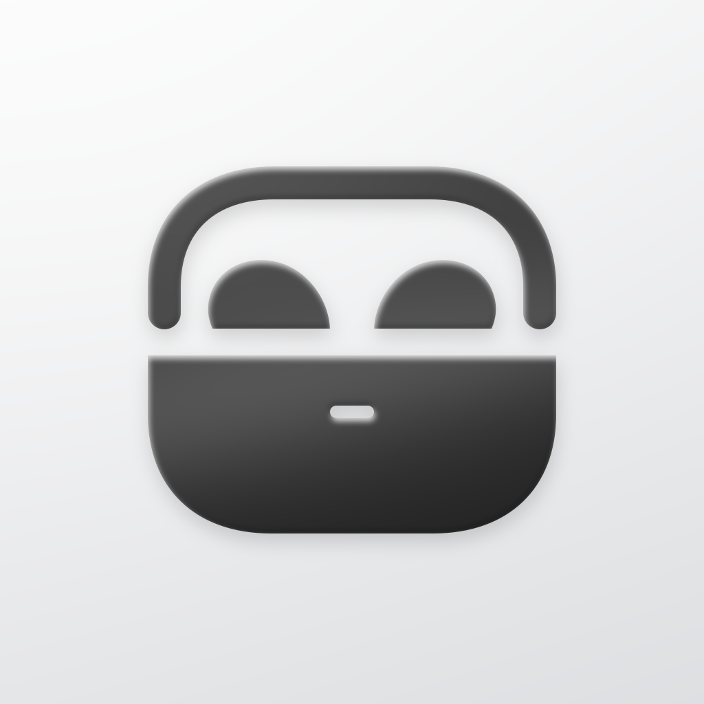

把你的耳机听音记录变成清晰的数据。
podly 从「健康」读取耳机音量记录,在本机统计每副 AirPods 的使用时长、常用时段、平均音量,并按 WHO 标准给出安全听音剂量。所有数据只留在这台设备上,无需账号、不联网。
打开「健康」→ 浏览 → 听力 → 耳机音频 → 数据访问,确认 podly 已开启。再前往「设置」→ 隐私与安全性 → 健康 → 耳机音频,打开「包含其他耳机」。佩戴耳机播放一段时间,数据通常需要几分钟才会出现。
podly 目前只统计能识别为 AirPods 系列的设备。累计使用不足一小时的设备不会出现在列表中(阈值以后续版本为准)。
不会。podly 没有服务器,也没有分析或广告 SDK。健康数据、统计结果和设置都保存在本机。
打开一次 podly 即可刷新数据;也可以在设置 → 健康与安全中开启「后台刷新」,让健康数据变化时自动更新小组件。
参照 WHO/ITU 建议:80 dB(A)、每周 40 小时。开启「儿童/敏感听音模式」后基准降为 75 dB(A)。剂量只作参考,不构成医疗建议。
目前 podly 的全部功能免费开放,无需购买。
遇到问题或有建议,请在 GitHub Issues 提交,我们会尽快查看。
提交问题时请附上 iOS 版本和机型,不要上传健康数据截图。
podly reads headphone audio records from Health and summarizes each pair's listening time, daily patterns and average level on device, with a safe-listening dose based on WHO guidance. Everything stays on your device; no account and no network are required.
Open Health → Browse → Hearing → Headphone Audio Levels → Data Access and make sure podly is enabled. Then go to Settings → Privacy & Security → Health → Headphone Audio Levels and turn on “Include Other Headphones”. Play something through your headphones; data usually appears within a few minutes.
podly currently counts devices recognized as AirPods. Devices with less than an hour of total use are not listed.
No. There is no server, analytics or advertising SDK. Health data, statistics and settings stay on your device.
Open podly once to refresh. You can also enable “Background refresh” in Settings → Health & safety so widgets update when Health changes.
Against the WHO/ITU reference of 80 dB(A) for 40 hours per week. The child/sensitive mode lowers the reference to 75 dB(A). The dose is informational, not medical advice.
All features are currently free; no purchase is required.
Please open an issue on GitHub Issues. Include your iOS version and device model, and do not attach screenshots of health data.